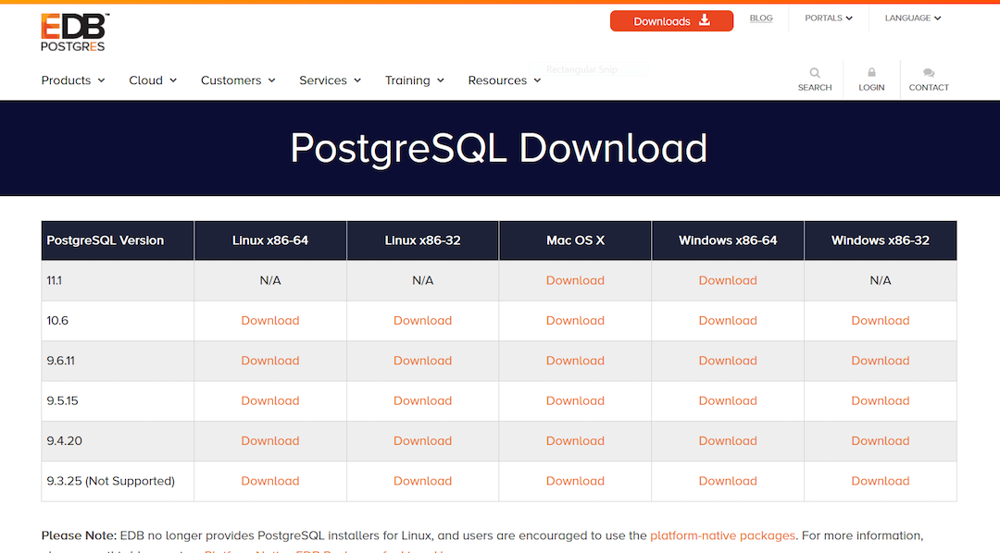
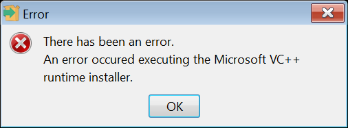

PostgreSQL 关系数据库
Table of Contents
1 PostgreSQL
PostgreSQL 是一种特性非常齐全的自由软件的对象-关系型数据库管理系统（ORDBMS）， 是以加州大学计算机系开发的 POSTGRES，4.2 版本为基础的对象关系型数据库管理系统。 POSTGRES 的许多领先概念只是在比较迟的时候才出现在商业网站数据库中。PostgreSQL 支 持大部分的 SQL 标准并且提供了很多其他现代特性，如复杂查询、外键、触发器、视图、 事务完整性、多版本并发控制等。同样，PostgreSQL 也可以用许多方法扩展，例如通过增 加新的数据类型、函数、操作符、聚集函数、索引方法、过程语言等。另外，因为许可证 的灵活，任何人都可以以任何目的免费使用、修改和分发 PostgreSQL。
2 windows 下载并安装
首先去官网上下载所需的安装文件 download。

我下载的是 postgresql-9.6.11-1-windows-x64.exe ，双击点开是直接报错安装不了，出现如下提示：

通过网络资料查找得知，可以通过跳过本地 C++ 运行库来解决这个错误。具体安装使用如下命令行。
postgresql-9.6.11-1-windows-x64.exe --install_runtimes 0
3 mac 下配置 postgres
3.1 使用 Homebrow 安装
这里安装 9.6 版本的 postgres
brew install postgresql@9.6
初始化
initdb /usr/local/var/postgresql@9.6 -E UTF8
3.2 初始创建数据库和账户
createdb
3.3 登录数据库
psql
登录成功提示
> psql psql (9.6.13) Type "help" for help. hujinghui=#
4 数据库创建及配置
4.1 创建用户及数据库
-- 用户名及密码 CREATE USER pguser WITH PASSWORD 'pg$PassWord'; CREATE DATABASE pgdb OWNER pguser; -- 添加权限 GRANT ALL PRIVILEGES ON DATABASE pgdb TO pguser; ALTER ROLE pguser CREATEDB;
4.2 登录数据库
psql -U pguser -d pgdb
4.3 常见控制台命令
\password：设置当前登录用户的密码 \h：查看 SQL 命令的解释，比如\h select。 \?：查看 psql 命令列表。 \l：列出所有数据库。 \c [database_name]：连接其他数据库。 \d：列出当前数据库的所有表格。 \d [table_name]：列出某一张表格的结构。 \du：列出所有用户。 \e：打开文本编辑器。 \conninfo：列出当前数据库和连接的信息。 \password [user]: 修改用户密码 \q：退出
5 远程连接数据库配置
postgres 默认只能通过 localhost 连接，如果需要建立远程连接则需要进行配置。找到
postgres 配置文件所在目录，homebrew 安装后默认配置文件位于
/usr/local/var/postgresql@9.6
5.1 修改 postgresql.conf
编辑或添加下面一行，使 postgresql 可以接受来自任意 IP 的连接请求。
listen_addresses = '*'
5.2 修改 pg_hba.conf
配置服务端允许的认证方式
# TYPE DATABASE USER CIDR-ADDRESS METHOD host all all 0.0.0.0/0 md5
修改过后需要重启才能生效
6 ubuntu 下配置 postgres
6.1 进入管理命令行
Ubuntu 默认安装的 postgres 可以通过下面命令进入数据库
sudo -u postgres psql
直接使用 sql 了修改 postgres 默认用户的密码。
ALTER USER postgres WITH PASSWORD 'postgres';
7 常用命令速查
7.1 查看数据库基本信息
-- 查看所有用户列表: SELECT rolname FROM pg_roles; -- 查看当前用户: SELECT current_user; -- 查看当前用户权限 \du -- 查看所有数据库列表 \l -- 查看当前数据库 SELECT current_database(); -- 查看当前数据库的所有表 \dt -- 查看函数列表 \df <schema>
7.2 数据库相关的操作命令
-- 连接数据库 \c <database_name> -- 创建数据库 CREATE DATABASE <database_name> WITH OWNER <username>; -- 删除数据库 DROP DATABASE IF EXISTS <database_name>; -- 重命名数据库 ALTER DATABASE <old_name> RENAME TO <new_name>;
7.3 用户信息相关的操作命令
-- 查看所有用户 SELECT rolname FROM pg_roles; -- 创建用户 CREATE USER <user_name> WITH PASSWORD '<password>'; -- 删除用户 DROP USER IF EXISTS <user_name>; -- 修改用户密码 ALTER ROLE <user_name> WITH PASSWORD '<password>';
7.4 表相关的操作命令
-- 查看所有表 \dt -- 查看全局的表 \dt *.* -- 创建表 CREATE TABLE <table_name> ( <column_name> <column_type>, <column_name> <column_type>, <column_name> <column_type> ); -- 创建用户表的例子 CREATE SEQUENCE global_id INCREMENT BY 1 MINVALUE 1 NO MAXVALUE START WITH 9999; CREATE TABLE users ( id INT PRIMARY KEY NOT NULL DEFAULT NEXTVAL('global_id'), code VARCHAR(32), -- data is invalid when code is NULL created_at TIMESTAMP WITHOUT TIME ZONE NOT NULL DEFAULT CURRENT_TIMESTAMP, updated_at TIMESTAMP WITHOUT TIME ZONE NOT NULL DEFAULT CURRENT_TIMESTAMP, username VARCHAR(64) NOT NULL, nickname VARCHAR(64), password VARCHAR(128), birthday DATE, CONSTRAINT unique_username UNIQUE (username) ); ALTER TABLE users OWNER TO <tabowner_name>; COMMENT ON TABLE users IS '用户表'; COMMENT ON COLUMN users.username IS '用户登录的用户名'; COMMENT ON COLUMN users.nickname IS '用户昵称'; -- 删除表 DROP TABLE IF EXISTS <table_name> CASCADE;
7.5 数据备份与还原
# 备份数据库 pg_dump <database_name> # 还原数据库 pg_restore -d <database_name> -a <file_pathway>
-- 导出 csv 文件 \copy <table_name> TO '<file_path>' CSV; -- 导入 csv 文件 \copy <table_name> FROM '<file_path>' CSV;
8 小技巧
8.1 竖行显示查询结果
有时候查看的行数比较多，不方便一次性浏览，可以使用 \x 来开启竖行显示，这样
结果更加易读。
pgdb=> select * from users; id | code | created_at | updated_at | username | nickname | password | birthday --------+------+----------------------------+----------------------------+-----------+------------+----------+------------ 100001 | | 2019-06-20 20:05:56.214153 | 2019-06-20 20:05:56.214153 | admin | SuperUser | | 100000 | | 2019-06-20 20:05:56.116695 | 2019-06-22 22:21:48.667 | hujinghui | Jinghui Hu | | 1992-06-15 (2 rows) pgdb=> \x Expanded display is on. pgdb=> select * from users; -[ RECORD 1 ]-------------------------- id | 100001 code | created_at | 2019-06-20 20:05:56.214153 updated_at | 2019-06-20 20:05:56.214153 username | admin nickname | SuperUser password | birthday | -[ RECORD 2 ]-------------------------- id | 100000 code | created_at | 2019-06-20 20:05:56.116695 updated_at | 2019-06-22 22:21:48.667 username | hujinghui nickname | Jinghui Hu password | birthday | 1992-06-15
8.2 查看表结构及注释
psql 的可以使用 \d 显示一个表的结构，如果需要显示每行的注释，可以使用 \d+
选项。
pgdb=> \d students;
Table "public.students"
Column | Type | Modifiers
------------+-----------------------------+-------------------------------------------------
id | integer | not null default nextval('global_id'::regclass)
code | character varying(32) |
created_at | timestamp without time zone | not null default now()
updated_at | timestamp without time zone | not null default now()
name | character varying(64) | not null
gender | character varying(1) |
phone | character varying(16) |
joined_at | date |
Indexes:
"students_pkey" PRIMARY KEY, btree (id)
Referenced by:
TABLE "course_students" CONSTRAINT "course_students_student_id_fkey" FOREIGN KEY (student_id) REFERENCES students(id)
TABLE "scores" CONSTRAINT "scores_student_id_fkey" FOREIGN KEY (student_id) REFERENCES students(id)
pgdb=> \d+ students;
Table "public.students"
Column | Type | Modifiers | Storage | Stats target | Description
------------+-----------------------------+-------------------------------------------------+----------+--------------+----------------------
id | integer | not null default nextval('global_id'::regclass) | plain | |
code | character varying(32) | | extended | |
created_at | timestamp without time zone | not null default now() | plain | |
updated_at | timestamp without time zone | not null default now() | plain | |
name | character varying(64) | not null | extended | |
gender | character varying(1) | | extended | | M = Male, F = Female
phone | character varying(16) | | extended | |
joined_at | date | | plain | |
Indexes:
"students_pkey" PRIMARY KEY, btree (id)
Referenced by:
TABLE "course_students" CONSTRAINT "course_students_student_id_fkey" FOREIGN KEY (student_id) REFERENCES students(id)
TABLE "scores" CONSTRAINT "scores_student_id_fkey" FOREIGN KEY (student_id) REFERENCES students(id)